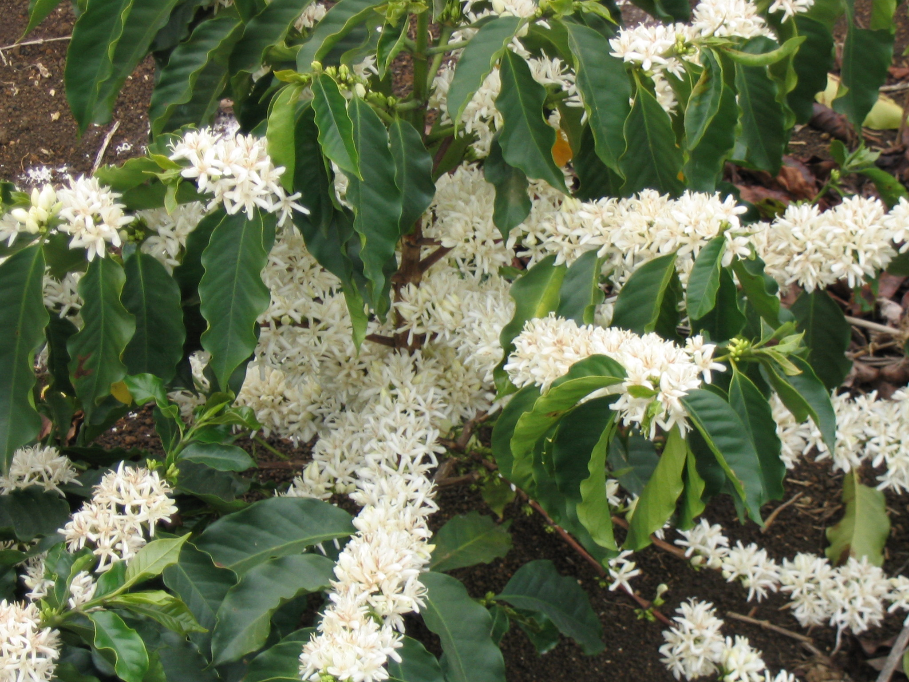
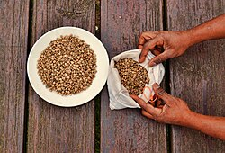
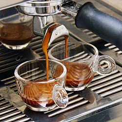

Gallery — Bean to Cup

Coffee Blossoms
Delicate white jasmine-scented flowers on a coffee plant — they last only a few days before dropping, replaced by the green coffee cherries that slowly ripen to red over 9 months.

Green Coffee Beans
Unroasted (green) coffee beans ready for the roaster — dense, grassy-scented, and pale. At this stage they can be stored for months without flavor loss; roasting starts the clock.

Freshly Roasted Beans
Freshly roasted coffee beans cooling on the drum — the Maillard reaction has transformed pale green seeds into aromatic, oil-sheened brown beans full of complex flavor compounds.

Espresso Machine
A commercial espresso machine forcing 9 bars of pressure through a 20g puck of finely ground coffee — extracting a 30ml shot in 25–30 seconds with a rich crema on top.

Latte Art
A flat white served with a classic rosette pattern poured in steamed micro-foam — the barista's signature, formed by controlling the flow of velvety milk over espresso.